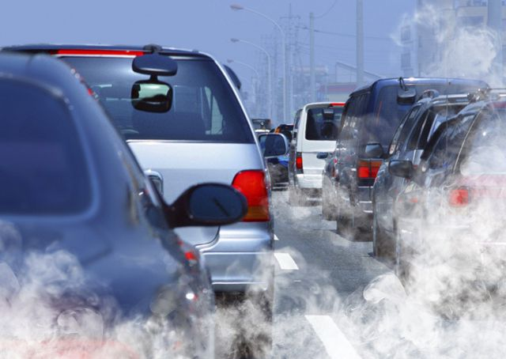

|
Чтобы изменение климата не привело к катастрофе, нужны срочные меры. Согласно докладу, который ООН выпустила в 2018 году,
в ближайшие десять лет мы должны вдвое сократить выбросы парниковых газов.
К сожалению, наша цивилизация реагирует на эту угрозу слишком медленно, а в некоторых сферах мы даже усугубляем
ситуацию. И одна из таких сфер — транспорт.
Около 15,55 % выбросов парниковых газов в мире связано с транспортом, а, к примеру, в Евросоюзе — целых 27 %.
В России доля выбросов транспорта меньше — 12 %. Но последние десять лет объём транспортных выбросов в нашей
стране непрерывно растёт. С 1990 года транспортные выбросы по всему миру выросли на 71 %, и три четверти из них приходятся на автотранспорт.
|
|
В среднем, обычный легковой автомобиль ежедневно сжигает около 15 литров топлива.
Расходуя эти 15 литров, каждая машина ежедневно выпускает около 9 кг диоксида углерода, а проще говоря, углекислого газа.
Ежедневно на дороги во всем мире выезжает порядка 500 миллионов автомобилей... При этом один городской автобус может вместить
и перевезти столько же людей, сколько 40 легковушек.
|

|